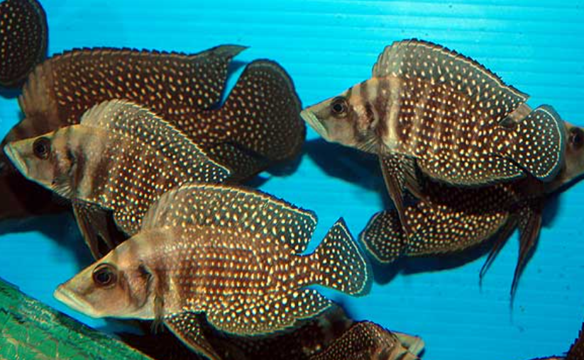

- Ordre : Cichliformes
- Famille : Cichlidae
- Genre : Altolamprologus
- Espèce : A. calvus

Altolamprologus calvus est un cichlidé endémique du lac Tanganyika en Afrique de l'Est. Décrit par Poll en 1978, il appartient à un genre spécialisé morphologiquement pour la vie dans les anfractuosités rocheuses. L'épithète calvus signifie "chauve", en référence à l'absence d'écailles sur la partie supérieure de la tête entre les yeux, une adaptation permettant au poisson de s'insérer plus profondément dans les fissures rocheuses sans s'écorcher.
Le corps est extrêmement comprimé latéralement, haut et court, ce qui lui permet de se faufiler dans les fentes les plus étroites pour échapper aux prédateurs ou chasser ses proies. Les mâles atteignent environ 13 cm, tandis que les femelles restent plus petites, aux alentours de 8 à 10 cm. La coloration varie selon la localité géographique (variétés noires, blanches ou jaunes), mais elle est généralement sombre avec de nombreux petits points brillants sur les flancs. Les écailles sont dures et cténoïdes, offrant une véritable "armure" contre les prédateurs.
Cette espèce présente une croissance extrêmement lente, mettant plusieurs années à atteindre sa taille adulte. Sa morphologie est le résultat d'une spécialisation évolutive poussée vers un mode de vie benthique et rupicole.
Altolamprologus calvus est un poisson calme, au tempérament plutôt solitaire en dehors des périodes de reproduction. C'est un prédateur spécialisé qui se nourrit principalement d'alevins d'autres cichlidés et de petits crustacés qu'il débusque dans les failles. Son mode de chasse est lent et calculé : il observe longuement sa proie avant de l'aspirer par une extension rapide de sa bouche protractile.
Bien qu'il puisse se montrer territorial envers ses congénères, il est généralement indifférent aux autres espèces de taille similaire ou supérieure. En cas de menace, il ne fuit pas toujours mais se courbe pour présenter ses flancs hauts et durs, rendant son ingestion difficile par un prédateur. C'est un poisson strictement rupicole qui ne s'aventure que rarement en pleine eau ou au-dessus des zones sablonneuses.
Mode : ovipare, pondeur sur substrat caché (généralement dans une coquille ou une fente étroite).
La stratégie de reproduction est adaptée à sa morphologie. La femelle choisit une cavité ou une coquille dont l'entrée est trop étroite pour que le mâle puisse y pénétrer. Elle y dépose ses œufs (entre 50 et 200 selon l'âge). Le mâle libère sa laitance à l'entrée de la cavité, puis la femelle ventile les œufs pour faire entrer l'eau fécondée.
C'est la femelle qui assure seule la garde du nid et des œufs, tandis que le mâle patrouille aux alentours pour chasser les intrus. L'éclosion survient après environ 2 à 3 jours, et la nage libre est atteinte après une dizaine de jours. Les alevins sont très petits et ont une croissance particulièrement lente.
Dimorphisme sexuel : Le mâle est nettement plus grand que la femelle à l'âge adulte. Ses nageoires pelviennes, dorsale et anale sont plus effilées et pointues. La femelle conserve une silhouette plus trapue et petite, ce qui est essentiel pour accéder aux cavités de ponte étroites interdites au mâle.
Espérance de vie : En conditions optimales, cette espèce peut vivre de 8 à 12 ans. Sa longévité est corrélée à son métabolisme lent.
L'habitat naturel de Altolamprologus calvus est constitué par les côtes rocheuses du lac Tanganyika, généralement entre 2 et 10 mètres de profondeur, bien qu'il ait été observé jusqu'à 40 mètres. Il fréquente les zones d'éboulis rocheux massifs où les failles sont nombreuses. L'eau y est très stable, fortement minéralisée et alcaline (pH 8.5-9.2), avec une clarté cristalline. La végétation est quasiment absente de cet habitat, dominé par le biofilm algal recouvrant les roches.
Répartition

Origine naturelle :
- Afrique de l'Est : Lac Tanganyika (Endémique).
- Présent principalement dans la partie sud-ouest du lac (côtes congolaises et zambiennes).
- Localité type : Kapampa, République Démocratique du Congo.
Paramètres de maintenance
Température : 24 à 27 °C.
pH : 8,0 à 9,2 (eau très alcaline indispensable).
GH : 10 à 20 °dGH (eau dure).
Conductivité : 500–650 µS/cm.
Volume conseillé : Minimum 200 L pour un couple. Décor composé impérativement d'éboulis rocheux stables formant de nombreuses failles verticales.
Régime alimentaire
Régime : carnivore prédateur (piscivore et micro-invertébrés).
En aquarium, il accepte les nourritures congelées (artémias, mysis, krill) et les nourritures sèches de haute qualité (granulés). Il ignore généralement les paillettes flottantes en raison de son mode de vie benthique. Un apport régulier en proies riches en protéines est nécessaire pour sa croissance.